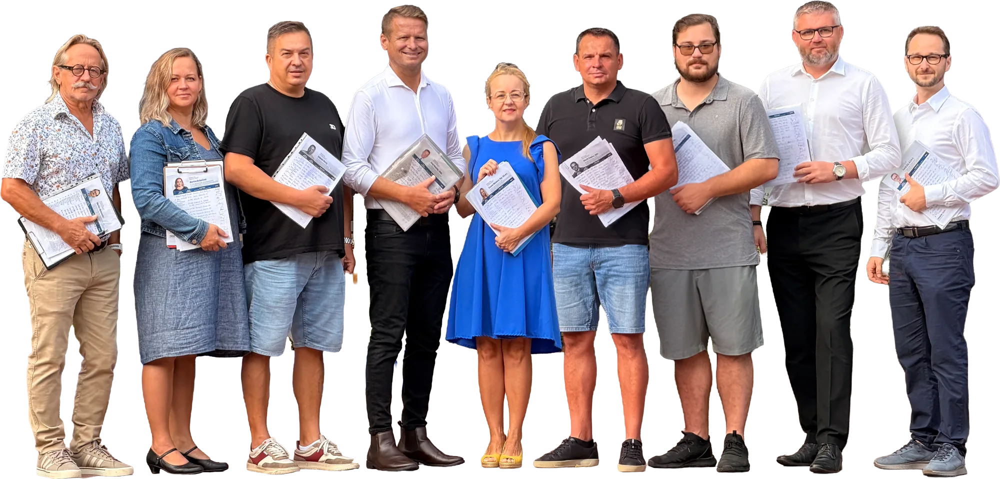
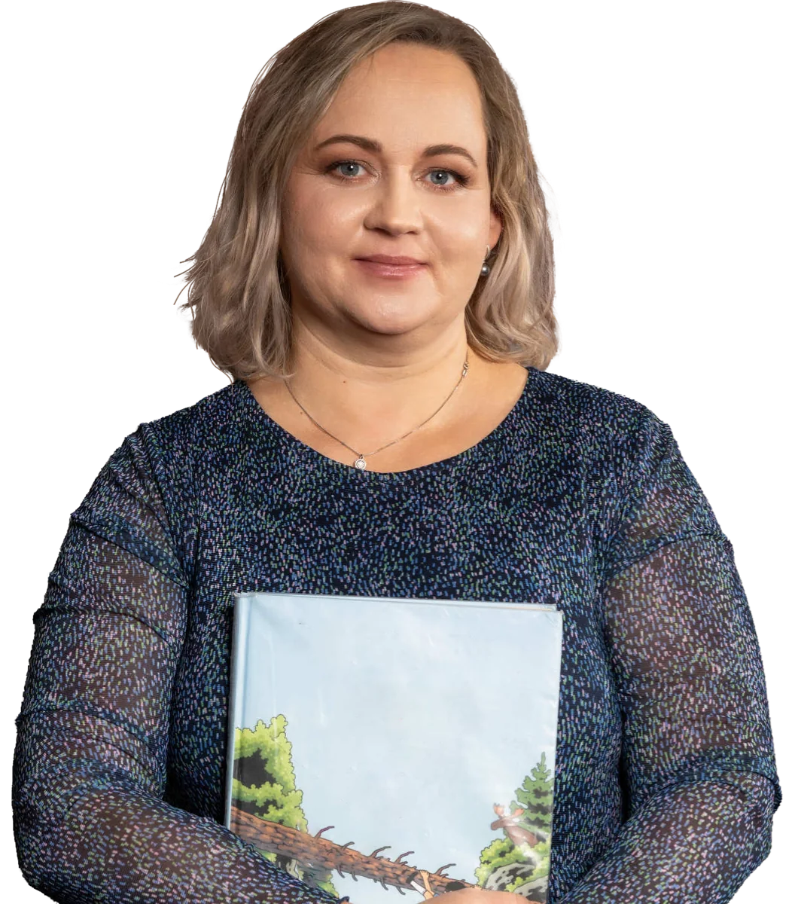
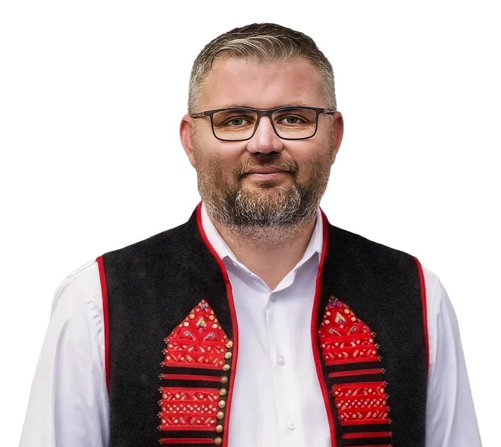

Ako starosta obce Horné Srnie vnímam, že rozvoj regiónu stojí na úzkej spolupráci obcí a kraja. V krajských voľbách máte v rukách možnosť zakrúžkovať až 9 kandidátov. Využite túto šancu naplno.
JurajHúserka

Ako starosta obce Horné Srnie vnímam, že rozvoj regiónu stojí na úzkej spolupráci obcí a kraja. V krajských voľbách máte v rukách možnosť zakrúžkovať až 9 kandidátov. Využite túto šancu naplno.
JurajHúserka

Keď spojím rolu mamy, knihovníčky a cukrárky, viem, že tie najlepšie veci potrebujú starostlivosť, skúsenosť a poctivé ingrediencie. Náš kraj si zaslúži dobré rozhodnutia postavené na pevných základoch.
MartinaBeňovičová
V politike sa riadim rozumom, ale aj svedomím. Verím, že verejný život potrebuje kultúru a ľudskosť. Využite každý svoj hlas a zvoľte si tím krajských poslancov, na ktorý sa môžete spoľahnúť.
ZuzanaMišáková

Som poslanec Trenčianskeho samosprávneho kraja a dôverne poznám, ako funguje krajská politika, a viem, že človek nemôže bojovať sám. Skutočné výsledky vznikajú len vtedy, keď ťaháme za jeden povraz.
TomášVaňo